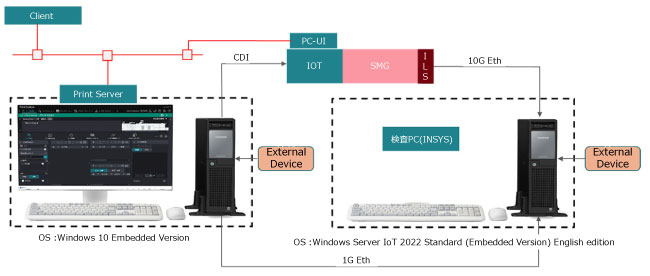
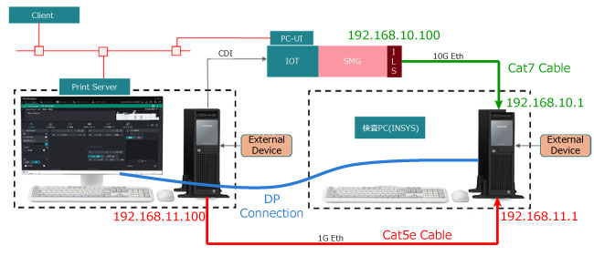
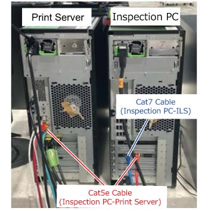

9.1.14.2 ...的安装 检查 PC 
产品代码
检查 PC: ED201519 (FB), ED201518 (FBAP)
PC 主机
Keyboard
Mouse
电源 电缆 (FB 仅)
Cat7 网络 电缆 x 10m (用于 10G 之间 检查 PC 和 ILS)
Cat5e 网络 电缆 x 10m (用于 1G 之间 检查 PC 和 打印服务器)
Smart 打印 Inspector : ED201416 (FB), ED201417 (FBAP)

License 必须 registered 在...上 打印服务器 侧面.
初始 措施
Assumed 系统 配置

(图 1) ism910023
检查 设置/results 可以 checked 从 the PrintStation menu 在...上 打印服务器.
但是, 此 功能 不是 可用的 用于 PrintStation 用于 Web 和 Client Driver.
The 打印服务器 必须 the one 和/与 以下 产品代码.
FB : ND200154
FBAP : TD200315
The 连接 模块 SFP+ 在...上 ILS 侧面 必须 the one provided by the customer.
Manufacturer: 10Gtek, 型号: ASF-10G-T
Manufacturer: FiberJP, 型号: SFP-10GLR31-10
If SFP+ 不是 provided, 系统 操作 无法 be checked, 虽然 it 可以 configured up 到 检查 PC.
安装步骤
Net 连接配置
连接 到 2nd port 在...上 打印服务器 侧面 和 设置 [192.168.11.100] in the Windows OS 设置 (默认 is DHCP).
编号 网络 配置 is ...所需的 the 检查 PC (pre-installed).
图示 of 连接配置 和 pre-installed IP 地址

(图 2) ism910024
显示 monitor 连接
连接 显示 电缆 到 On-电路板 DP Port. 代替 the expansion card,
请勿 use the port 的 expansion card.
the 显示 monitor 应 switched 使用 one used by the 打印服务器.
安装时, access 从 the 打印服务器 通过 Remote Desktop (192.168.11.1), 编号 need 用于 a monitor, keyboard, or mouse.
In addition, 当...时 connecting, use the keyboard 和 mouse bundled 和/与 系统.
连接 每个 网络 电缆 to a port 在...上 检查 PC, 打印服务器, 和 ILS.
检查 PC-打印服务器: Cat5e 网络 电缆
检查 PC-ILS : Cat7 网络 电缆
(Jumbo packet (9014 字节) is 设置 by 默认 in the 网络 driver 设置)

(图 3) ism910025
As a rule, change the IP 地址 的 2nd port 在...上 打印服务器 侧面 到 192.168.11.100 fixed IP, 但是 如果 subnet overlaps 使用 user net 环境, change it 到 appropriate subnet.
In 此 case, change the subnet to 192.168.11.1 在...上 检查 PC 侧面 in the OS 设置.
也, change the [Destination 的 检查 系统] 到 相同 地址 in the 打印服务器 系统 设置.
打开 the 检查 PC.
日志 on as an I-Server user (默认 PW: Server-999).
编号 需要 activate the OS 自...以来 it is shipped 使用 OS 已经 activated.
基于 the user's judgment, 连接 和 涂抹/施加 the USB 外部 media 该 contains the OS security patch recommended separately by FB.
The 确认 的 FB-recommended OS security patch is the 相同 用于 the 打印服务器 操作.
If necessary, change 系统 locale/language using the language 设置 change 工具, 和 然后 reboot. (FBAP 仅)
The factory 默认 language is Singapore (English)
Follow the SW 安装步骤 in the 打印服务器 维修 手册 to 更新 to a 版本 of V3.4.1 or later 该 is compatible 使用 检查 设备.
V3.4.1 or later versions 的 打印服务器 和/与 以下 product codes 也 exist, 但是 they 请勿 support 检查 devices.
FB : ND200148
FBAP : TD200292
安装 检查 设备 SW 选件 到 打印服务器 按照 the SW 选件 安装步骤 in the 打印服务器 维修 手册.
检查 INSYS-SW 版本 和 更新 if necessary.
当...时 the 检查 PC is started 和 the 检查 SW (INSYS) 维修 is activated, it 将 连接 到 打印服务器. Use Microsoft 边缘 在...上 检查 PC 侧面 和 输入 http://192.168.11.100 to 连接 remotely 到 打印服务器.
Run [Show_版本_info.bat] 在...下 D:\opt\INSYS\utility\CETool\工具 in PowerShell 和 确认 the build 日期 的 打印服务器-SW 和 the INSYS-SW 是 the 相同 or one day apart.
如果 IP 地址 的 2nd port 的 打印服务器 已 changed 从 the 默认, 连接 到 changed IP 地址.
如果 打印服务器-SW build 日期 和 INSYS-SW build 日期 是 two days or 更多 apart, 和 输入 http://192.168.11.100/download in Microsoft 边缘 在...上 检查 PC 侧面 to 连接 到 打印服务器 (PSforWeb).
Download SmartPrintInspector.zip 到 检查 PC 侧面 by clicking on Smart 打印 Inspector in the download menu.
Unzip the downloaded zip 文件 和 run SmartPrintInspector.msi to 安装 更新.
Files 无法 be shared.